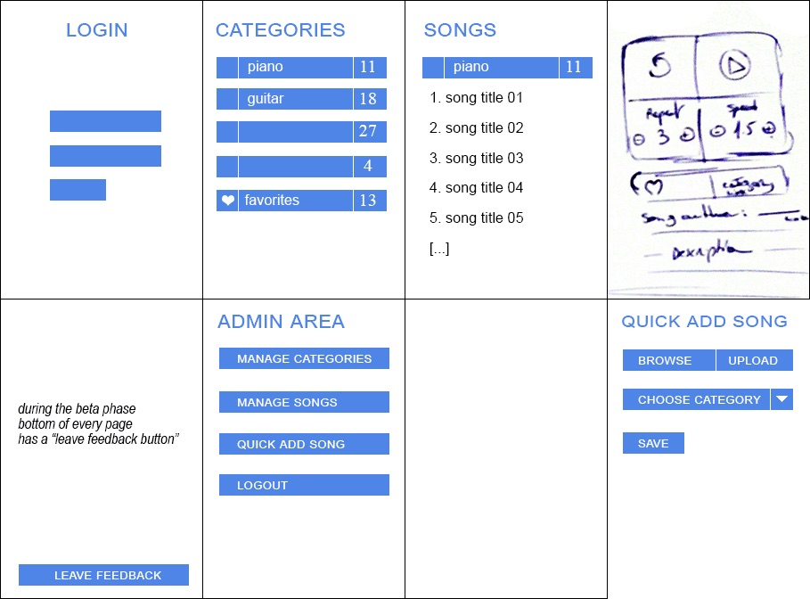

INFO You Will Need

FAQ
When should I ask my target audience for their preferred features?
Ask multiple times in the process, starting with the beginning of the project. Your audience might have different needs or restrictions that you have not thought of.Can I create a few wireframes and have someone turn it into an app for me?
No. You will need to conceive of the usable design, the backend coding and account for the whole user experience yourself or as a team.Can I spend a couple of minutes with a customer and have it count as design critique?
No, you need to fully understand the user's context for using the app to ensure it is most effective. Plan to spend at least an hour with them using the app.What do I do when I have released a beta version of my app?
Be ready to address system bugs as they occur from your users.
